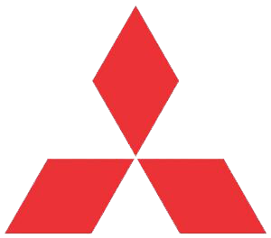

This is one of the most traditional universities of Latin America. In there I've spent years of hard study, this is an engineering school. I've gratuated in Electrical Engineer - Energy and Automation division.
Microsoft Corporation
Started as PMO Intern, but got organically pushed to the cloud division of this well known tech company. Have knonw Azure since the early days helping Enterprise customer to adopt cloud.

Mistubishi Heavy Industries
This was my only experience as an engineer. For a year, I designed the systems for the Sao Paulo subway line 6 (orange), including energy, ventilation, platforms, control, communictions, and other systems.
Atados - Connecting Nice People
I have always worked as volunteer in so many NGOs, now I started a full time job in this one! With the purpose of connecting volunteers to NGOs, I helped managing a team to execute all kind of social and administrative work.
Oracle Corporation
Started to work in business development, but a few months later I was already designing technology solutions for customers. As Solution Engineer, my current job is to work on edge of new technologies and practices to help customers improve their systems.